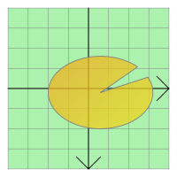

QGraphicsEllipseItem¶
Synopsis¶
Functions¶
- def
rect() - def
setRect(rect) - def
setRect(x, y, w, h) - def
setSpanAngle(angle) - def
setStartAngle(angle) - def
spanAngle() - def
startAngle()
Detailed Description¶
The
PySide2.QtWidgets.QGraphicsEllipseItemclass provides an ellipse item that you can add to aPySide2.QtWidgets.QGraphicsScene.
PySide2.QtWidgets.QGraphicsEllipseItemrespresents an ellipse with a fill and an outline, and you can also use it for ellipse segments (seePySide2.QtWidgets.QGraphicsEllipseItem.startAngle(),PySide2.QtWidgets.QGraphicsEllipseItem.spanAngle()).
 To set the item’s ellipse, pass a
PySide2.QtCore.QRectFtoPySide2.QtWidgets.QGraphicsEllipseItem‘s constructor, or callPySide2.QtWidgets.QGraphicsEllipseItem.setRect(). ThePySide2.QtWidgets.QGraphicsEllipseItem.rect()function returns the current ellipse geometry.
PySide2.QtWidgets.QGraphicsEllipseItemuses the rect and the pen width to provide a reasonable implementation ofPySide2.QtWidgets.QGraphicsEllipseItem.boundingRect(),PySide2.QtWidgets.QGraphicsEllipseItem.shape(), andPySide2.QtWidgets.QGraphicsEllipseItem.contains(). ThePySide2.QtWidgets.QGraphicsEllipseItem.paint()function draws the ellipse using the item’s associated pen and brush, which you can set by callingPySide2.QtWidgets.QAbstractGraphicsShapeItem.setPen()andPySide2.QtWidgets.QAbstractGraphicsShapeItem.setBrush().

-
class
PySide2.QtWidgets.QGraphicsEllipseItem([parent=nullptr])¶ -
class
PySide2.QtWidgets.QGraphicsEllipseItem(rect[, parent=nullptr]) -
class
PySide2.QtWidgets.QGraphicsEllipseItem(x, y, w, h[, parent=nullptr]) Parameters: - h –
PySide2.QtCore.qreal - rect –
PySide2.QtCore.QRectF - w –
PySide2.QtCore.qreal - x –
PySide2.QtCore.qreal - y –
PySide2.QtCore.qreal - parent –
PySide2.QtWidgets.QGraphicsItem
Constructs a
PySide2.QtWidgets.QGraphicsEllipseItem.parentis passed toPySide2.QtWidgets.QAbstractGraphicsShapeItem‘s constructor.See also
Constructs a
PySide2.QtWidgets.QGraphicsEllipseItemusingrectas the default rectangle.parentis passed toPySide2.QtWidgets.QAbstractGraphicsShapeItem‘s constructor.See also
Constructs a
PySide2.QtWidgets.QGraphicsEllipseItemusing the rectangle defined by (x,y) and the givenwidthandheight, as the default rectangle.parentis passed toPySide2.QtWidgets.QAbstractGraphicsShapeItem‘s constructor.See also
- h –
-
PySide2.QtWidgets.QGraphicsEllipseItem.rect()¶ Return type: PySide2.QtCore.QRectFReturns the item’s ellipse geometry as a
PySide2.QtCore.QRectF.See also
PySide2.QtWidgets.QGraphicsEllipseItem.setRect()QPainter.drawEllipse()
-
PySide2.QtWidgets.QGraphicsEllipseItem.setRect(x, y, w, h)¶ Parameters: - x –
PySide2.QtCore.qreal - y –
PySide2.QtCore.qreal - w –
PySide2.QtCore.qreal - h –
PySide2.QtCore.qreal
- x –
-
PySide2.QtWidgets.QGraphicsEllipseItem.setRect(rect) Parameters: rect – PySide2.QtCore.QRectFSets the item’s ellipse geometry to
rect. The rectangle’s left edge defines the left edge of the ellipse, and the rectangle’s top edge describes the top of the ellipse. The height and width of the rectangle describe the height and width of the ellipse.See also
PySide2.QtWidgets.QGraphicsEllipseItem.rect()QPainter.drawEllipse()
-
PySide2.QtWidgets.QGraphicsEllipseItem.setSpanAngle(angle)¶ Parameters: angle – PySide2.QtCore.intSets the span angle for an ellipse segment to
angle, which is in 16ths of a degree. This angle is used together withPySide2.QtWidgets.QGraphicsEllipseItem.startAngle()to represent an ellipse segment (a pie). By default, the span angle is 5760 (360 * 16, a full ellipse).See also
PySide2.QtWidgets.QGraphicsEllipseItem.spanAngle()PySide2.QtWidgets.QGraphicsEllipseItem.setStartAngle()QPainter.drawPie()
-
PySide2.QtWidgets.QGraphicsEllipseItem.setStartAngle(angle)¶ Parameters: angle – PySide2.QtCore.intSets the start angle for an ellipse segment to
angle, which is in 16ths of a degree. This angle is used together withPySide2.QtWidgets.QGraphicsEllipseItem.spanAngle()for representing an ellipse segment (a pie). By default, the start angle is 0.See also
PySide2.QtWidgets.QGraphicsEllipseItem.startAngle()PySide2.QtWidgets.QGraphicsEllipseItem.setSpanAngle()QPainter.drawPie()
-
PySide2.QtWidgets.QGraphicsEllipseItem.spanAngle()¶ Return type: PySide2.QtCore.intReturns the span angle of an ellipse segment in 16ths of a degree. This angle is used together with
PySide2.QtWidgets.QGraphicsEllipseItem.startAngle()for representing an ellipse segment (a pie). By default, this function returns 5760 (360 * 16, a full ellipse).
-
PySide2.QtWidgets.QGraphicsEllipseItem.startAngle()¶ Return type: PySide2.QtCore.intReturns the start angle for an ellipse segment in 16ths of a degree. This angle is used together with
PySide2.QtWidgets.QGraphicsEllipseItem.spanAngle()for representing an ellipse segment (a pie). By default, the start angle is 0.
© 2018 The Qt Company Ltd. Documentation contributions included herein are the copyrights of their respective owners. The documentation provided herein is licensed under the terms of the GNU Free Documentation License version 1.3 as published by the Free Software Foundation. Qt and respective logos are trademarks of The Qt Company Ltd. in Finland and/or other countries worldwide. All other trademarks are property of their respective owners.